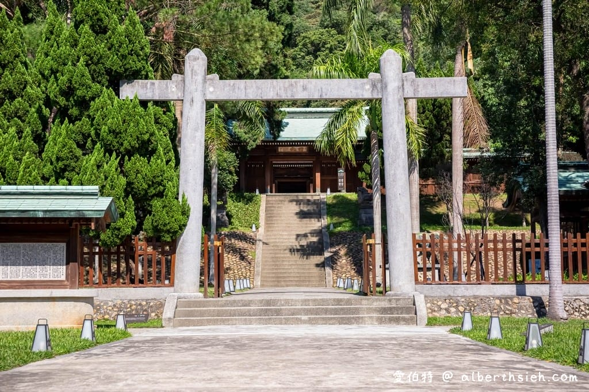
從神社鳥居
走到夜市燈火
桃園區是桃園市的行政與生活中心。虎頭山的綠、景福宮的香、忠烈祠的靜、夜市的熱鬧，都在三公里內。
今日推薦路線
第一次來桃園區，照這樣走最順。
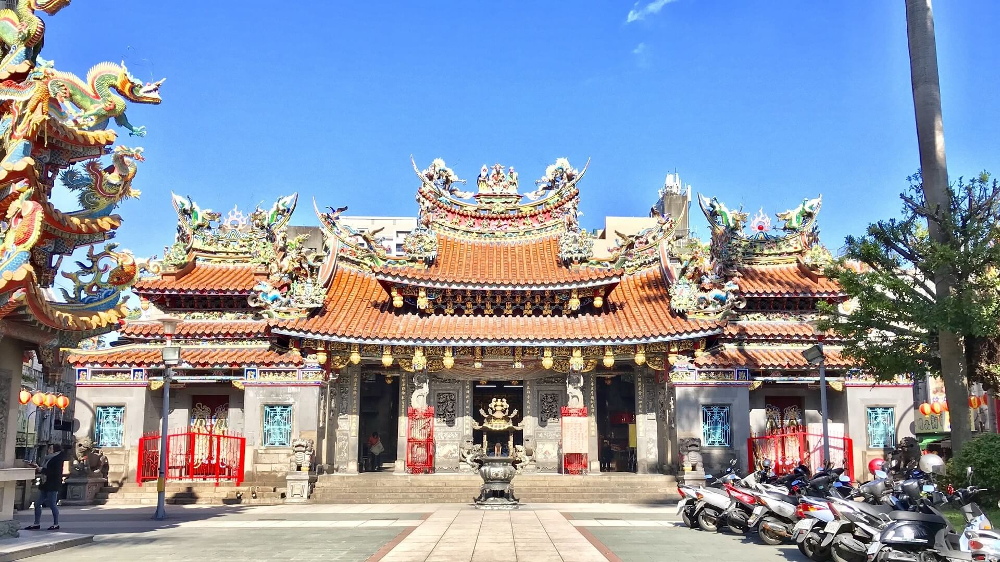
景福宮 → 77藝文町
從中正路大廟出發，拜完開漳聖王，散步到日式宿舍群喝咖啡。

虎頭山公園 → 孔廟
奧爾森林學堂木棧道、貓頭鷹樹屋，再到虎頭山麓的孔廟看建築。
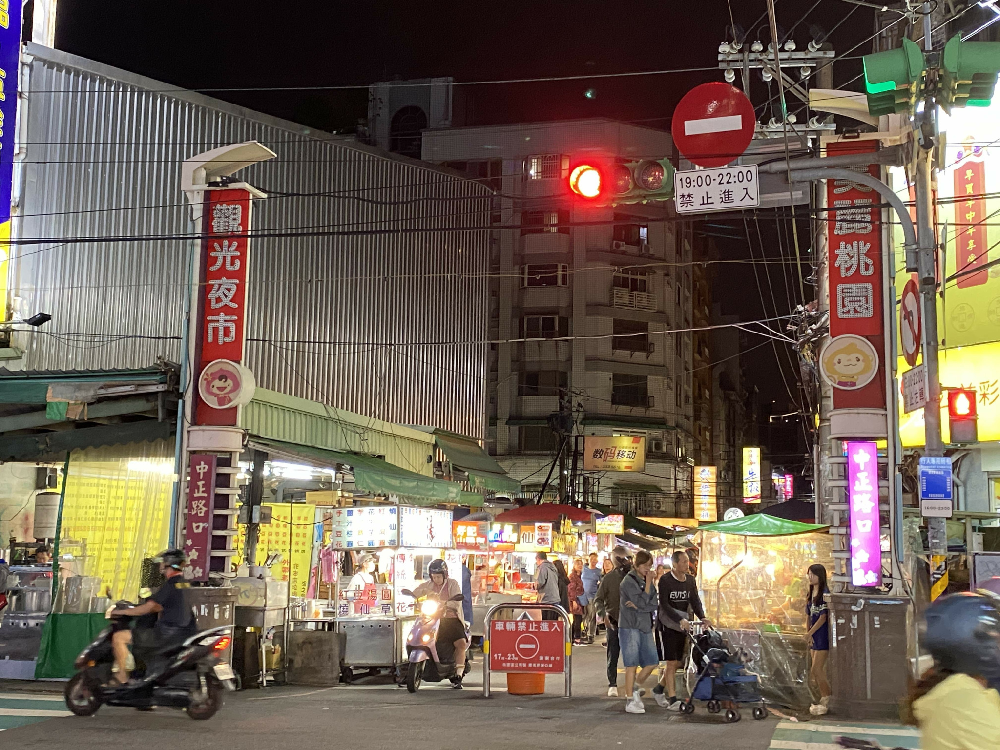
南門市場 → 觀光夜市
傍晚先逛南門市場，晚上到中正路夜市吃蚵仔煎、地瓜球。
快速認識桃園區
點下面卡片直接跳到對應頁面。
從桃仔園到桃園區
1747、1888、1920、1938，四個年份看懂地名怎麼來。
6 個必去景點
神社、景福宮、孔廟、虎頭山、藝文町、圖書館總館。
8 道在地小吃
蚵仔煎、肉圓、大腸麵線、客家小炒，全部有實物照片。
文化歷史
桃園區的地名、信仰與建築，是這樣一層一層疊起來的。
遍植桃樹之地，改稱桃仔園，是桃園最早的地名印象。
清丈登載為桃園，地名正式定型。
設桃園街，成為地方行政與商業中心。
戰後轉作忠烈祠，成為今日忠烈祠暨神社文化園區的前身。
桃園鎮為縣治，行政機能集中。
人口與工商快速成長，升格為縣轄市。
全台保存最完整的神社，指定為市定古蹟。
桃園縣升格直轄市，桃園市改制為桃園區。
文化資產
每一張都是實景照片。
景福宮
直轄市定古蹟。以開漳聖王信仰為中心，是老桃園人的信仰地標。地址：中正路208號
桃園忠烈祠暨神社文化園區
1938年落成，1985年保留。鳥居、參道、拜殿完整，是全台保存最完整的神社。地址：成功路三段200號
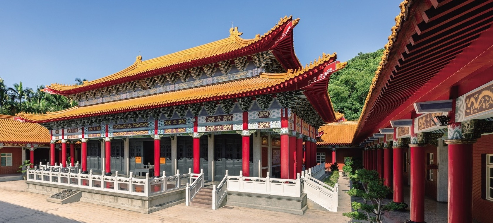
桃園孔廟
位於虎頭山麓，祭孔與建築之美兼具，大成殿紅柱黃瓦非常好拍。

桃園77藝文町
日式警察宿舍群再利用，文創、市集、咖啡輕食都在這裡。
知名景點
每一張卡都有實景照片。點分類可以篩選。
虎頭山公園
奧爾森林學堂空中木棧道、貓頭鷹樹屋、虎頭山環保公園夜景，親子放電首選。
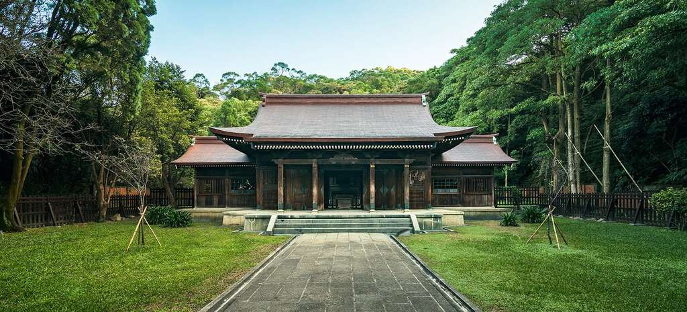
桃園忠烈祠暨神社文化園區
1938年落成，1985年保留，全台保存最完整的神社。鳥居、參道、拜殿都還在。

景福宮
以開漳聖王信仰為中心，老桃園人的信仰地標，周邊就是中正路商圈。
桃園孔廟
祭孔與建築之美兼具，大成殿紅柱黃瓦，適合慢慢逛、慢慢拍。
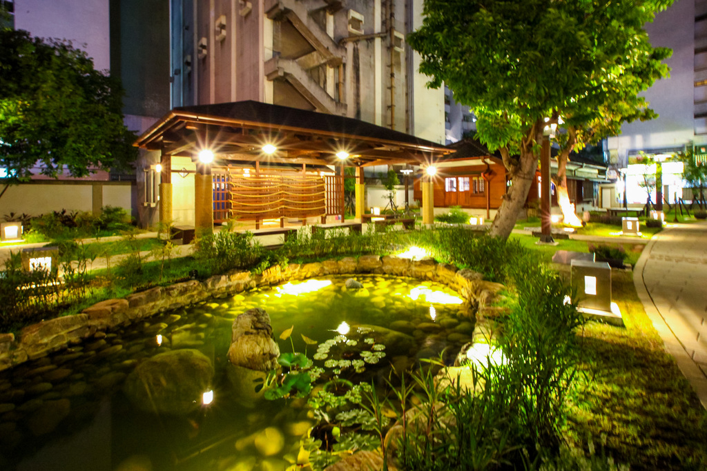
桃園77藝文町
百年舊警察宿舍重現，文創聚落、市集、咖啡輕食，假日親子好去處。

桃園藝文特區・市立圖書館總館
全台最美綠建築圖書館，生命樹中庭、蔦屋書店、星巴克都在這裡。
食物特色
每一道都有實物照片。點分類可以篩選。
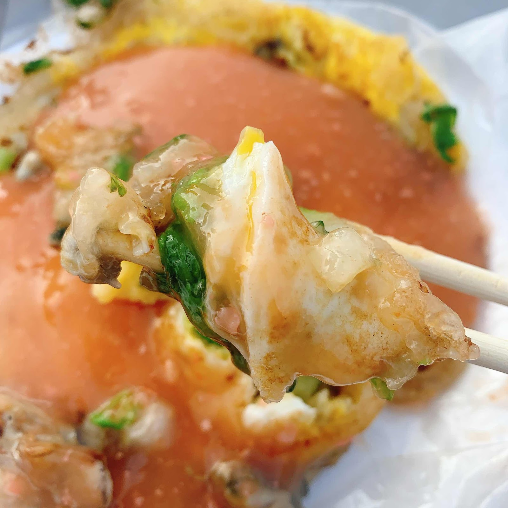
蚵仔煎
食材：鮮蚵、蛋、青菜、甜辣醬。外緣微焦、內裡滑嫩，夜市必點。
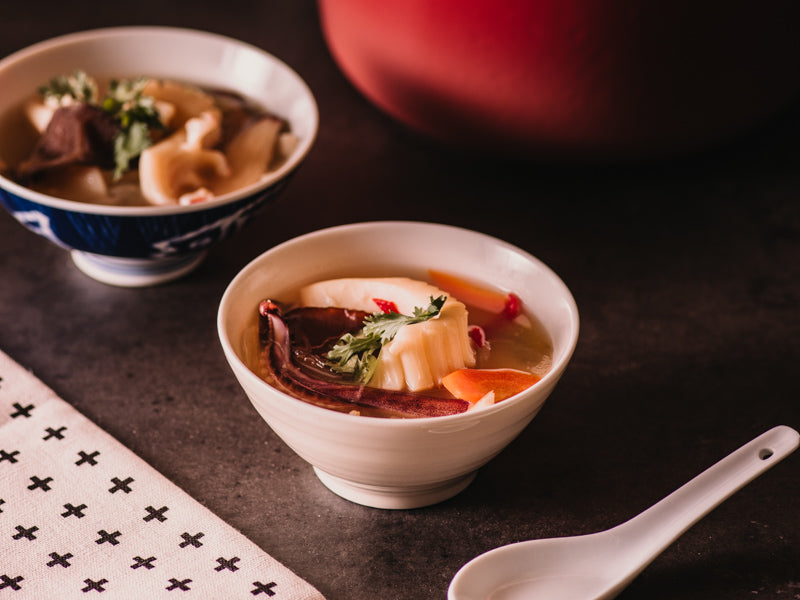
生炒花枝羹
食材：花枝、羹湯、烏醋。花枝彈牙，羹湯帶酸香。
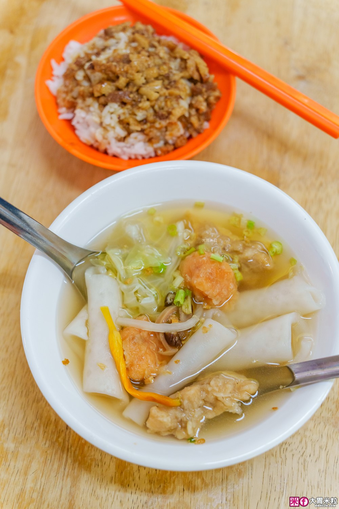
鼎邊趖
食材：米漿、蝦仁、香菇。米漿沿鍋邊烘成薄片，再下鍋煮成羹。
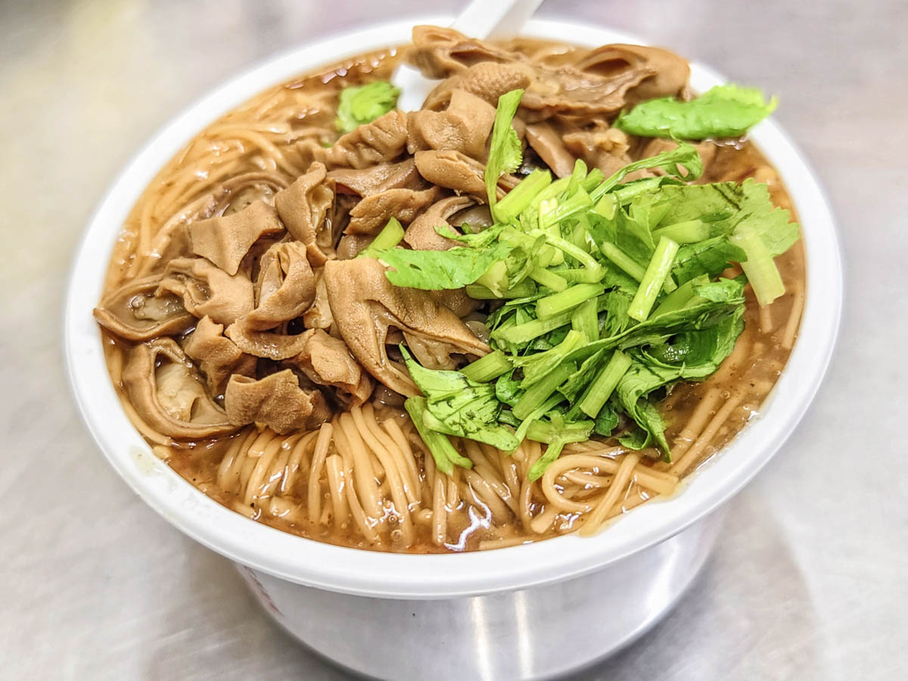
大腸麵線
食材：大腸、麵線、香菜、烏醋。滷得軟嫩的大腸是靈魂。
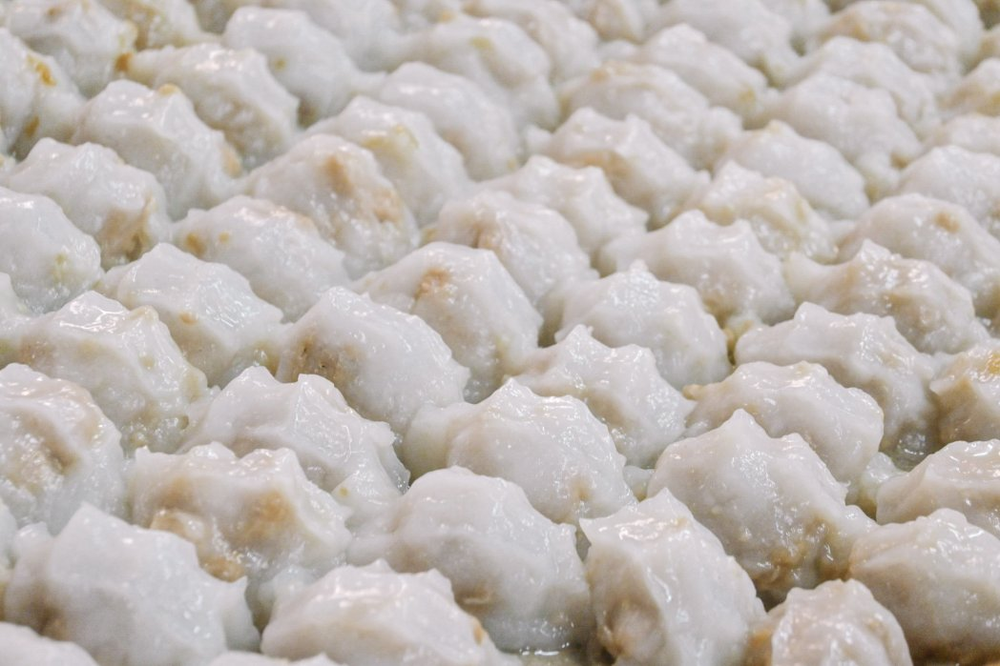
肉圓
食材：地瓜粉皮、豬肉、筍絲。外皮Q彈，淋醬吃最對味。

客家小炒
食材：酸菜、豬肉、薑絲。鹹香帶勁，是桃園客家味的代表。

鹽水雞・甘蔗雞
食材：雞肉、蔥、鹽水滷汁。皮香肉嫩，市場熟食攤必買。

地瓜球・豆花・愛玉
食材：地瓜、豆花、愛玉、糖水。趁熱吃最香，夜市收尾必吃。
市場與商圈
每一張都是實景照片。
桃園觀光夜市
桃園最熱鬧的夜市，中正路口紅色牌樓就是入口。
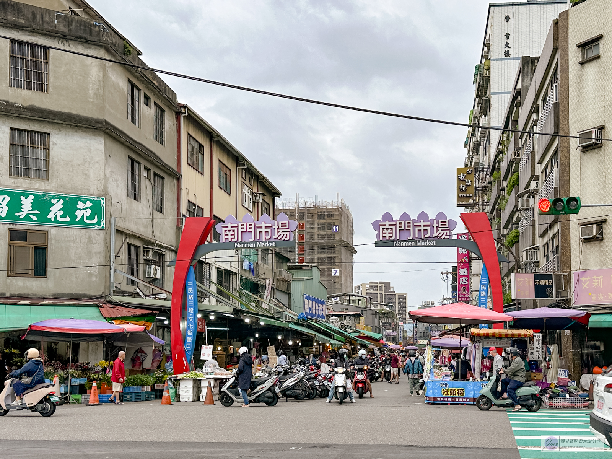
桃園南門市場
早餐街、熟食、乾貨都在這裡，在地人買菜的第一站。

力行市場
在地採買的生活市場，生鮮、熟食、日常用品一次買齊。
人口結構
桃園區是桃園市人口最多的行政區，生活機能最集中。
年齡結構概念
桃園區因工作機會多、交通便利，吸引年輕家庭移入，整體年齡結構比全台平均年輕。藝文特區、中正藝文與虎頭山周邊是新移入人口最集中的生活圈。
生活圈
中正路老城生活圈
景福宮、南門市場、觀光夜市，老店與傳統市場都在這裡。
藝文特區生活圈
圖書館總館、藝文廣場、百貨與咖啡店，新移入家庭最愛。
虎頭山生活圈
虎頭山公園、孔廟、忠烈祠，綠地多、適合親子與長輩散步。